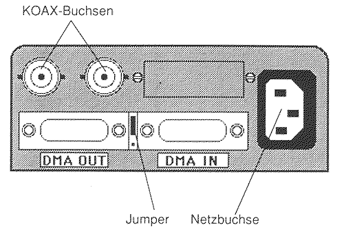

Previous
Next
TOC
Das PAMs Netzwerk
Der alte PAMs Net Adapter sitzt in einem blockähnlichen Gehäuse und
kommuniziert über den ACSI Anschluß mit dem Computer.

Die DIP-Schalter (einmal 4er und einmal 8er DIP) findet man auf der
Unterseite der Geräte. Der 4er DIP-Schalter ist für die ACSI ID zu-
ständig, der Schalter Nr.1 steht immer auf OFF und die restlichen
drei Schalter sind binär codiert. Ab Werk steht der Adapter auf der
ACSI ID6, das heißt, es sind die Schalter Nr. 3 und 4 auf ON. Der
8er DIP-Schalter dient der Einstellung der sogenannten NODE-ID.
Der Kippschalter zwischen den ACSI Buchsen ist für den Autoboot über
das Netzwerk zuständig.
Der neue PAMs Net Adapter sitzt in einem Stahlblech Gehäuse und
kommuniziert ebenfalls über den ACSI Anschluß mit dem Computer.
Bei neueren Adaptern geht diese Einstellung nur mittels des Program-
mes ADINSTIL.PRG, da bei diesen Geräten die Werte in einem EEPROM
abgespeichert werden.
weiterblättern
Kapitel Das PAMs Netzwerk, Seite 1